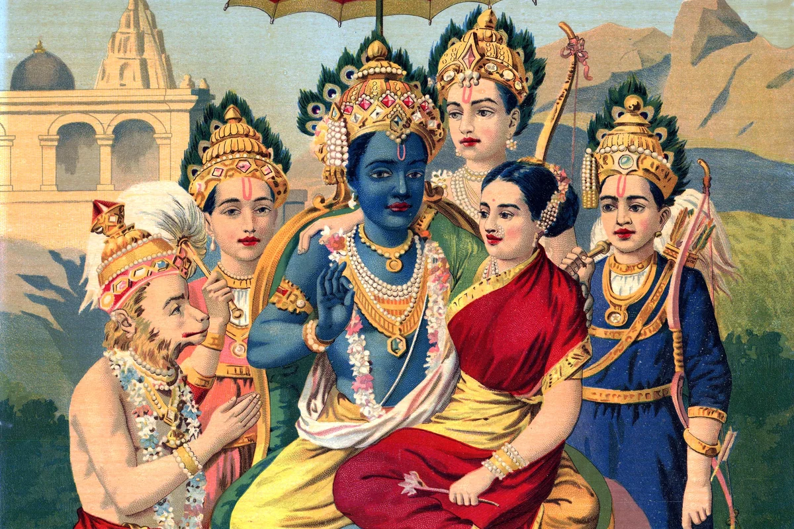
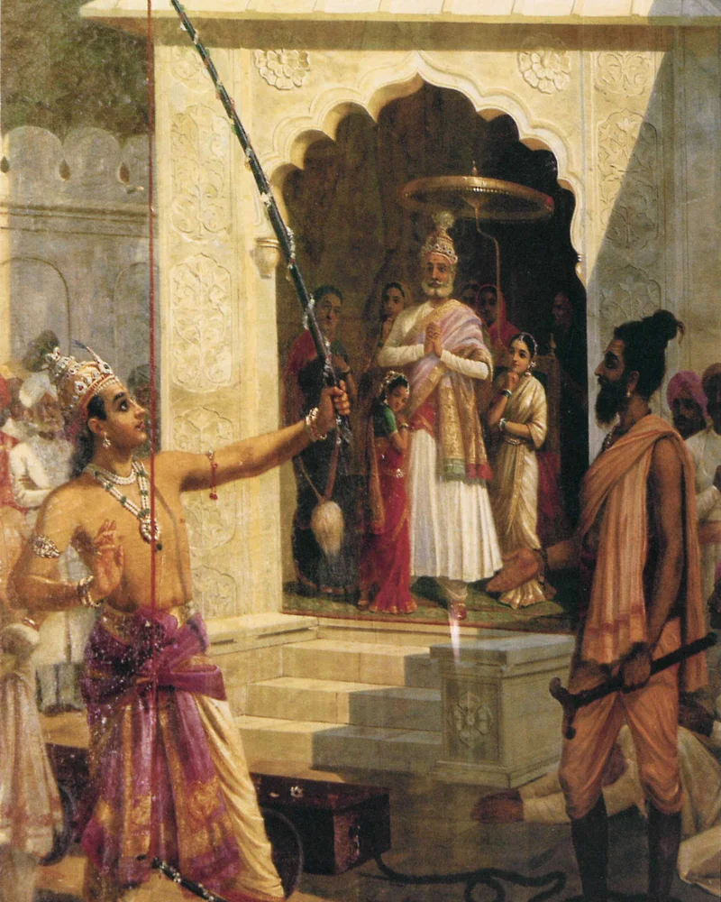
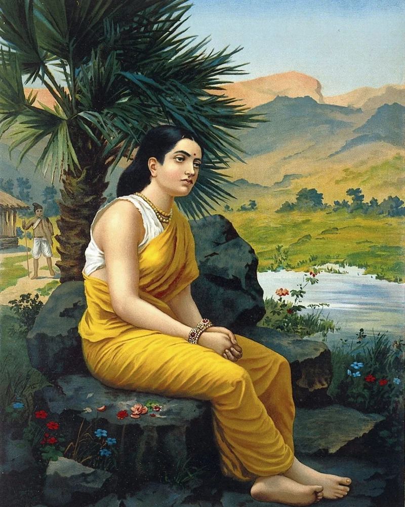
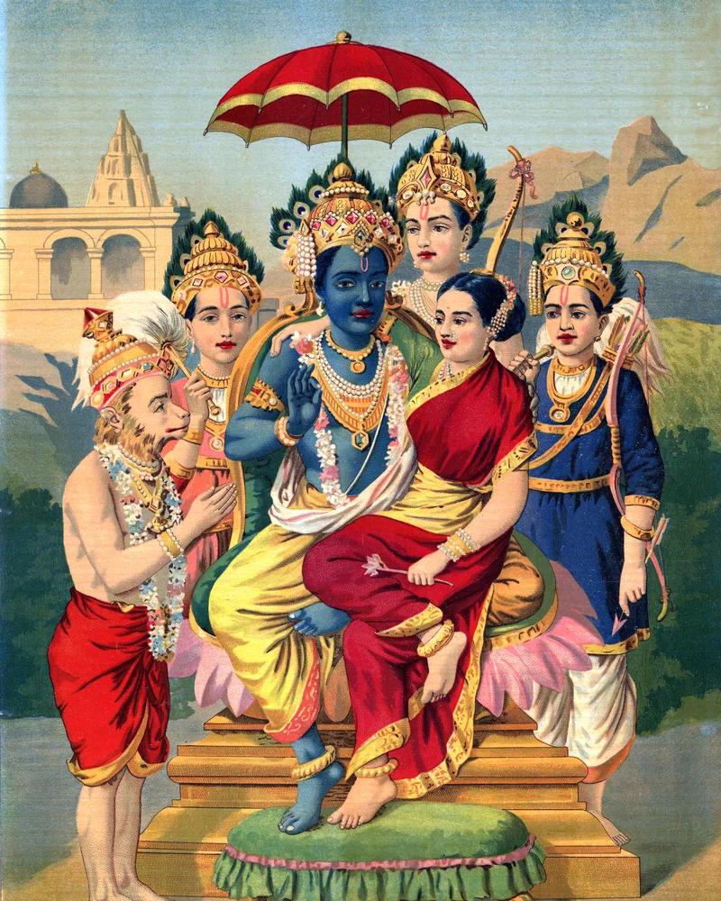
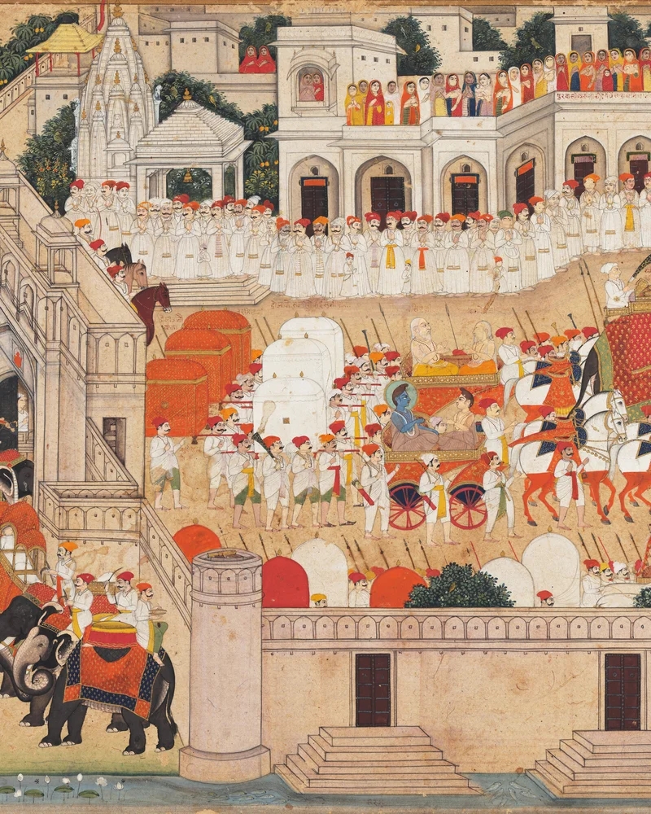
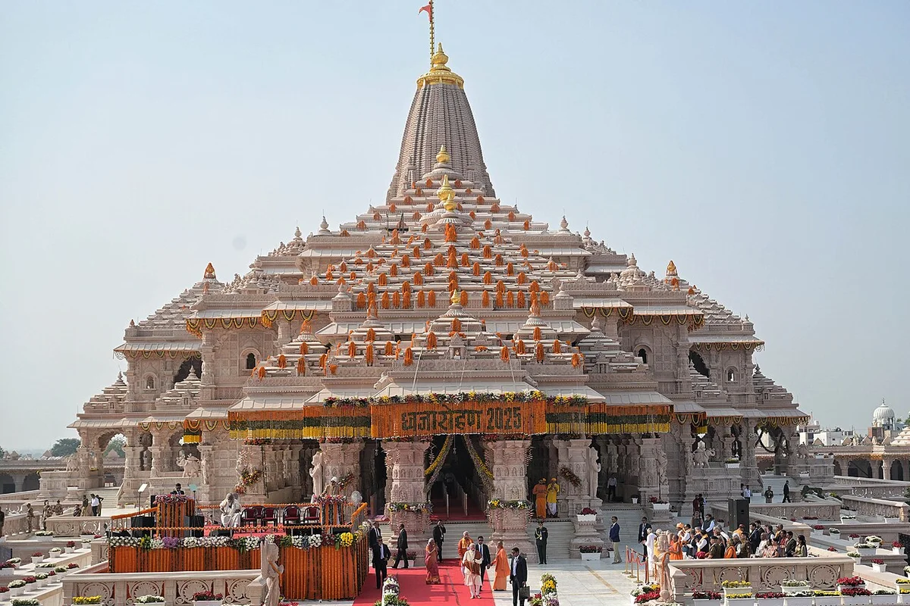
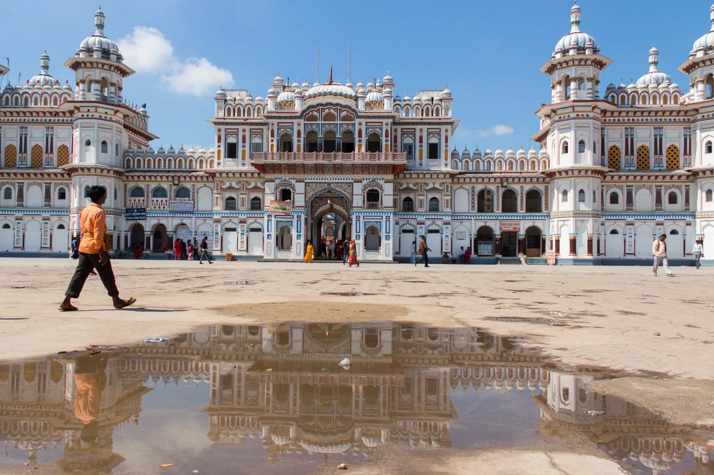
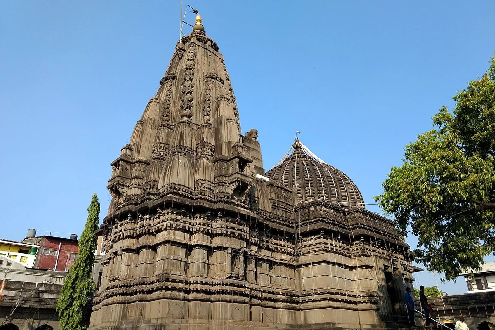
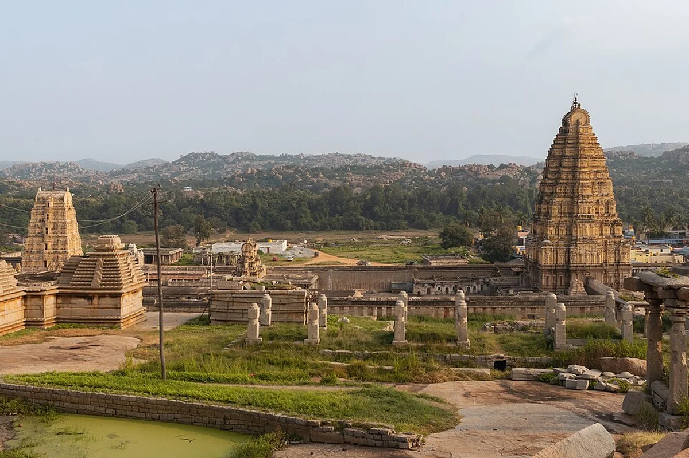
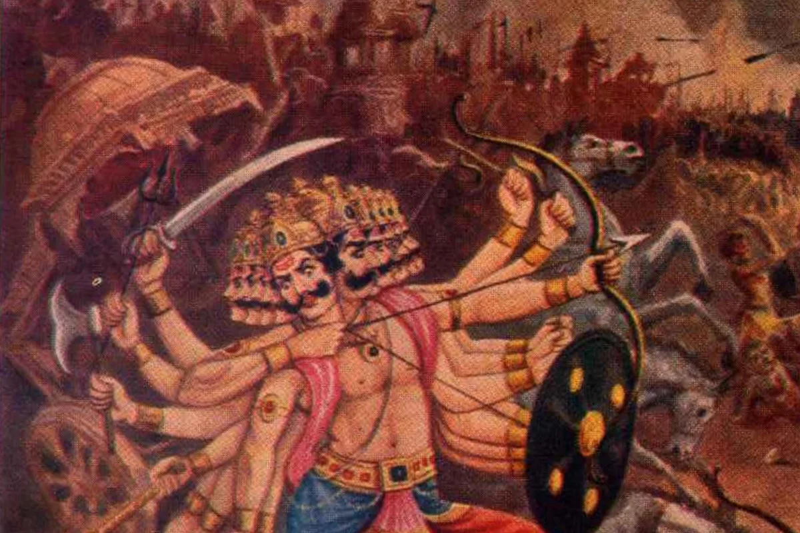

RAMAYANA — THE PATH OF DHARMA
Traditionally composed by Maharishi Valmiki, the Adi Kavi (First Poet), the Ramayana is the primordial epic (Adi Kavya) of Indian civilization. It chronicles the earthly journey of Lord Rama — an incarnation of cosmic truth, filial duty, unwavering rectitude, and universal compassion — providing humanity with an enduring moral beacon across millennia.

THE FIRST POEM OF CIVILIZATION
How sorrow (Shoka) transformed into the eternal rhythm of Sanskrit poetry (Shloka) on the quiet banks of the Tamasa River.
यत्क्रौञ्चमिथुनादेकमवधीः काममोहितम्॥
yat krauñca-mithunād ekam avadhīḥ kāma-mohitam ||
"O hunter, may you not attain peace or renown for endless years, since you have slain one of this loving pair of Krauncha birds while enchanted by love." — Valmiki Ramayana (Bala Kanda 2.15)
The Ramayana originated not from scholastic detachment, but from profound empathy (Karuna). Witnessing a hunter mercilessly strike down a male crane, Maharishi Valmiki was pierced with boundless compassion. Out of this spontaneous grief arose the world’s first poetic meter — the thirty-two syllable Anushtubh shloka. Soon after, Lord Brahma appeared and commanded the sage to compose the complete history of Lord Rama, declaring: "As long as mountains stand and rivers flow upon this earth, so long shall the story of the Ramayana be recited among mankind."
Righteous action upheld without compromise, even when personal loss is total.
The sanctity of one's word, honoring truth above empires and sovereignty.
Renouncing sovereign power and luxury for fraternal devotion and familial honor.
THE SEVEN KANDAS OF RAMAYANA
Explore step-by-step the seven monumental books of the epic, accompanied by classical verses, authentic Indian paintings, and critical narrative milestones.
DIVINE CHARACTERS OF RAMAYANA
Portrayed through verified classical Indian masterpieces and historical palm-leaf traditions.

Maryada PurushottamaLord Rama
Seventh Avatara of Vishnu • Supreme Ideal of Dharma
The eldest prince of Ayodhya, Rama personifies unwavering adherence to truth, detachment from sovereign luxury, and compassionate protection of all living beings.

JanakiGoddess Sita
Incarnation of Goddess Lakshmi • Paragon of Fortitude
Found in the sacred furrow of the earth by King Janaka, Sita personifies divine purity, fearless loyalty, and moral sovereignty amidst the deepest trials of exile and captivity.
Hanuman
Rudra Avatara • Purest Devotion & Boundless Strength
The son of Vayu and Anjana, Hanuman leaped across the southern ocean, burnt golden Lanka, carried Mount Dronagiri, and remains the eternal protector of all who chant Rama's name.

SaumitriLakshmana
Incarnation of Sheshanaga • The Vigilant Brother
Renouncing sleep and royal comfort for fourteen years to stand guard in the wilderness, Lakshmana felled Indrajit through his unbroken celibacy and righteous vows.

AyodhyaBharata
Righteous Sovereign of Rama's Padukas
Refusing the crown granted to him by Kaikeyi's boons, Bharata governed Ayodhya as an ascetic regent with Rama's sacred wooden sandals upon the royal throne.
King Ravana
Ten-Headed Lord of Lanka • Scholar & Devotee of Shiva
A master of the four Vedas and composer of the Shiva Tandava Stotram whose unbridled ego and lust caused the complete ruin of his golden civilization.
THE SACRED JOURNEY OF RAMA
Trace the historic geographic path across ancient Bharat: from the solar city on the Sarayu River to the southern island of Lanka.
Ayodhya (Kosala)
The glorious solar capital on the sacred Sarayu River where Lord Rama took birth, spent his youth, renounced the imperial throne without sorrow, and returned for his immortal coronation.

Mithila (Videha)
The philosophical realm of Rajarshi Janaka where Rama strung and broke Lord Shiva’s Pinaka bow, uniting Ayodhya and Videha in eternal spiritual matrimony with Goddess Sita.

Chitrakoot
The serene hills along the Mandakini River where Rama, Sita, and Lakshmana lived in hermitage, visited Sage Atri and Anasuya, and where Bharata received Rama's sacred wooden Padukas.
Panchavati & Dandakaranya
The five sacred banyan trees along the Godavari River. Here Lakshmana fashioned the Parnashala, and where Maricha appeared as the golden deer, leading to the tragedy of Sita's abduction.

Kishkindha & Pampa Lake
The rocky kingdom along the Tungabhadra River where Rama met Hanuman and King Sugriva, struck the fire-witnessed alliance of friendship, and mobilized legions across four directions.

Rameshwaram & Rama Setu
The southern shore where Lord Rama worshipped Shiva Linga and architects Nala and Nila engineered the floating causeway across the ocean with stones inscribed with Rama's sacred name.
Lanka (Trikuta Mountain)
The golden island realm of Ravana, site of Ashoka Vatika, the monumental clash of arms, the slaying of Ravana, and the glorious liberation of Goddess Sita under the banner of Dharma.

LORD HANUMAN — QUINTESSENCE OF DEVOTION & STRENGTH
The immortal Rudra Avatara whose life exemplifies how absolute humility before Dharma awakens infinite strength.
वातात्मजं वानरयूथमुख्यं श्रीरामदूतं शरणं प्रपद्ये॥
vātātmajaṁ vānara-yūtha-mukhyaṁ śrī-rāma-dūtaṁ śaraṇaṁ prapadye ||
"I seek refuge in the celestial messenger of Sri Rama — who is as swift as thought and the wind, master of all senses, foremost among intellectuals, son of the wind God, and leader of the Vanaras."
Hanuman represents the pinnacle of Indian consciousness where supreme martial power (Shakti), boundless intellect (Jnana), and profound selflessness (Bhakti) unite harmoniously. Endowed with the eight celestial Ashta Siddhis (powers to expand colossally, become lighter than air, or enter impenetrable places), he never used his strength for personal glory, identifying himself purely with the words: "Dāso’haṁ Kausalyendrasya" — I am the humble servant of the Lord of Kosala.
- The Leap of Faith: Crossing one hundred yojanas of roaring ocean without resting at Mainaka Mountain.
- Consoling Mother Sita: Breathing divine courage into Sita with Rama's signet ring in Ashoka Vatika.
- Mount Dronagiri: Lifting an entire Himalayan mountain carrying the Sanjeevani herb to revive Lakshmana before sunrise.
SACRED VERSES OF THE RAMAYANA
Meditative contemplations on eternal verses that encapsulate the spiritual and moral philosophy of the epic.
THE LIVING TRADITIONS OF RAMAYANA
From Sanskrit to Tamil, Awadhi, Bengali, Malayalam, and Southeast Asia — how the sacred story continues to inspire human literature and culture.
SANSKRIT GLOSSARY (SHABDAKOSHA)
Key ethical, philosophical, and traditional terms essential to understanding the Ramayana.
LINEAGE OF THE SOLAR DYNASTY (SURYAVANSHA)
The illustrious royal ancestry of the Ikshvaku dynasty, renowned for unyielding adherence to truth and sovereign sacrifice.
THE LEGENDARY EVENTS
Iconic milestones of the Ramayana captured in vivid storytelling and classical visual art.